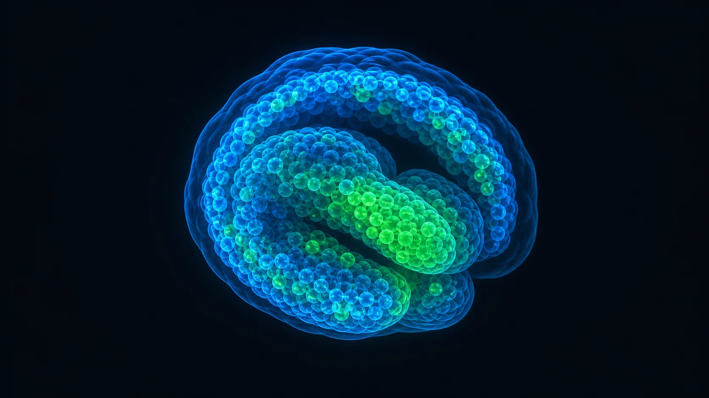
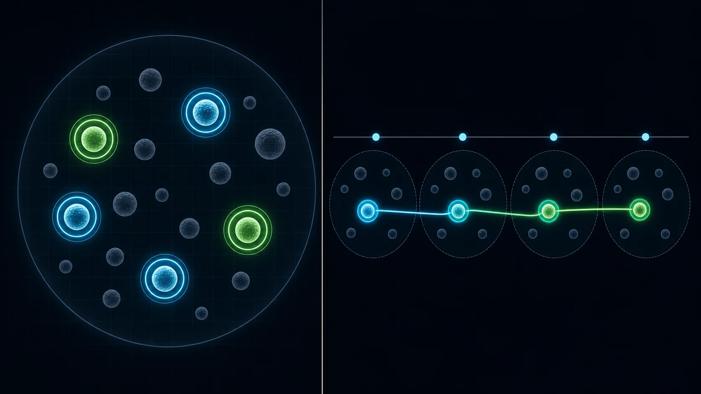
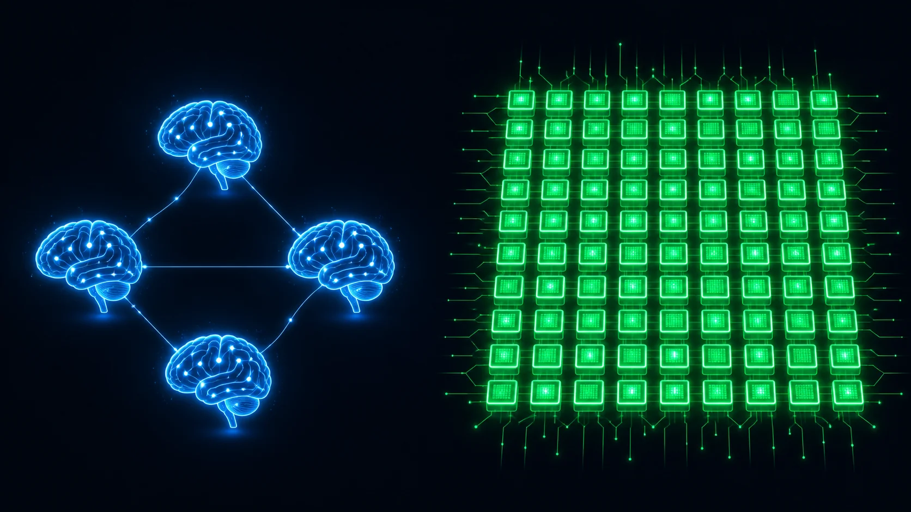
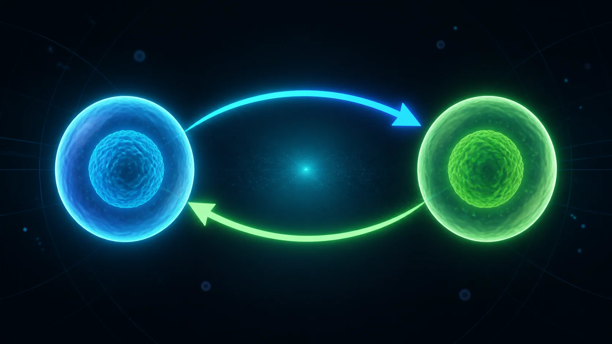
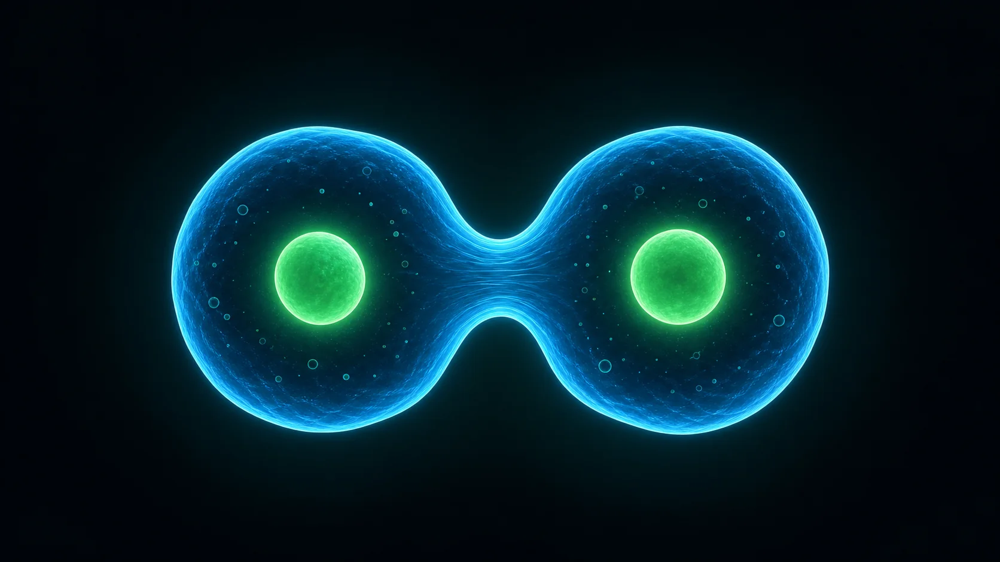
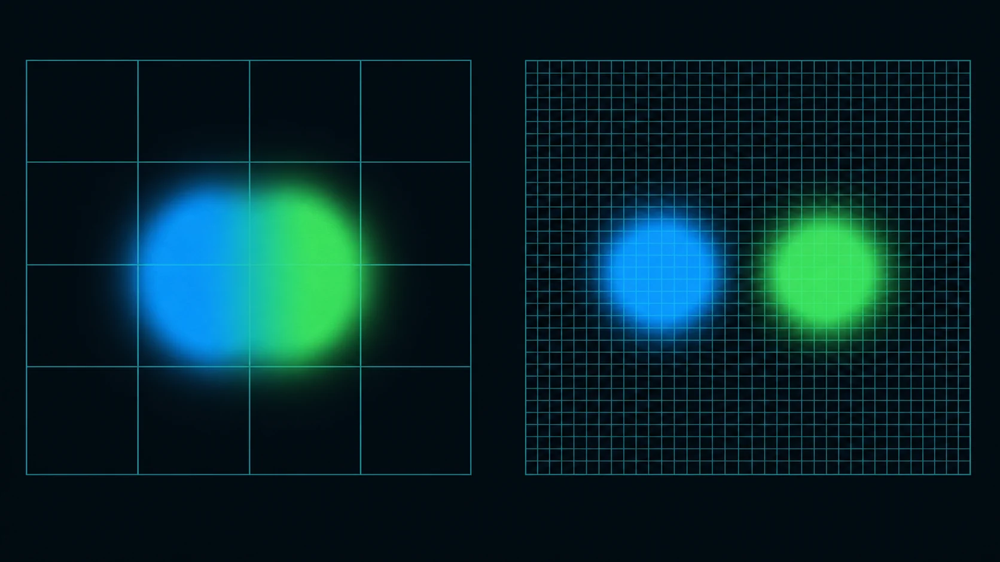

一個真實的 Kaggle 細胞追蹤賽，從 0.14 的陽春版開始：問一隊 AI 找解法 → 綜合 → 自己寫 → 用官方的尺驗證 → 全程自動化 → GPU 加碼 → 發明新招上排行榜 → 換 SOTA 引擎挑戰更高。這份把每一步「改了什麼、為什麼、背後的道理」都講給你聽——不用會寫程式也讀得懂。

用生活想：像看一段從天上拍演唱會的影片，你要一路盯著每一個人——他走到哪、什麼時候離場、什麼時候又多一個人。現在把「人」換成細胞、「演唱會」換成正在長大的胚胎，而且是立體的、上千顆、還會一顆分裂成兩顆。用手一顆一顆追，追到天亮也追不完。
電腦具體要交出什麼？兩件事——這也是後面每一步都圍著轉的兩個字：

先有一個能完整提交的官方起手式（nearest-neighbor，0.143 分）。要進步，第一步不是寫程式，而是講清楚它弱在哪——這就是要餵給 AI 的題幹。
U-Net 分割、顯式偵測細胞分裂、Kalman、軌跡篩選、ResNet 真假分類器。一句到位：「匈牙利只能 1:1，分裂直接漏掉，是 0.143 卡住主因。」
分割（Watershed/StarDist/Cellpose）、追蹤（TrackMate/btrack/ultrack＝主辦自家 SOTA/Linajea）、分裂偵測，附比較表與分階段路線圖、Kaggle 離線部署筆記。
8 個方向皆附論文：watershed 拆黏連、global gap-closing、division 規則、還有神來一筆第 8 點：「用訓練集做本地驗證、metric-aware 後處理——後處理常比模型本體更貼評分。」
| 方向 | 木瓜溪 | 秀姑巒 | 立霧 | 判斷 |
|---|---|---|---|---|
| 偵測升級 | U-Net 分割 | Watershed/StarDist | Watershed/Cellpose | ✅ 三方都提 |
| 細胞分裂偵測 | 顯式偵測 | 啟發式/CNN | division 規則 | ✅ 三方都提 |
| 連線升級 | Kalman/篩選 | btrack/LAP | gap-closing | ✅ 三方都提 |
| 改進 | 做法 | 對應評分 |
|---|---|---|
| watershed 偵測 | 距離轉換找種子 → 把黏在一起的細胞拆開 | ↑ 撈到更多真細胞 |
| 細胞分裂偵測 | 沒配到的子細胞若緊鄰已配對母細胞 → 接成第二個小孩 | ↑ 那 0.1× 的 division 項 |
| 斷軌補回 | 軌跡尾端跨 2 幀接回開頭 | ↑ 救回斷軌 |
# 偵測：watershed 拆黏連
dist = distance_transform_edt(binary)
peaks = peak_local_max(dist, min_distance=2, labels=binary)
labels = watershed(-dist, markers, mask=binary)
# 分裂：沒配到的子細胞接到緊鄰的已配對母細胞
if j in matched_parent and d[j] <= DIV_DISTANCE and out_count[pid[j]] < 2:
add_edge(pid[j], cid[ci])不靠提交、不浪費次數，就知道改進有沒有用——這是把分數穩定往上推的關鍵習慣（立霧第 8 點）。
第一層：自寫 proxy，先看「方向」（用 train 的稀疏答案快速比）
但這個 proxy 故意少了官方的 node 膨脹懲罰。improved 偵測 14088 個 node、真值只稀疏標 52 個——會不會其實被罰爆？光看 proxy 不準，必須上官方尺。
第二層：裝官方評分套件，拿「真分數」（tracking-cellmot，CZ Biohub 開源，跟排行榜同把尺）
| 版本 | 官方 score（含懲罰） | edge_jaccard | node_recall（撈到真細胞比例） |
|---|---|---|---|
| baseline | 0.021 | 0.020 | 0.058 |
| improved | 0.245 | 0.233 | 0.463 |
手動拖檔、在網頁編輯器貼程式又卡又慢。改用官方 CLI 後，每改一版幾秒一輪、我自己迭代。
這次踩到、值得記住的眉角：
CPU 的 watershed 是「手寫規則」。GPU 讓我們能跑深度學習細胞分割 Cellpose——一個在大量細胞影像上訓練過的神經網路。同一把官方尺，三方對照。

| 方法 | 官方 score | node_recall（撈到真細胞） | 耗時 |
|---|---|---|---|
| baseline（CPU 閾值） | 0.041 | 0.08 | 8 秒 |
| watershed（CPU，我們 AI 找的改進） | 0.344 | 0.81 | 8 秒 |
| cellpose（GPU 深度學習） | 0.570 | 1.00 | 23.5 分鐘 |
真正的開發不是閉門造車——先去讀比我們強的公開高分解法（用 Kaggle CLI 直接 kernels pull 下載原始碼），再請團隊三個 AI 把它們＋我們的，synthesize 成一個新組合。重點：不是抄，是借一塊、自己加兩塊。
三個 AI 各自的新設計（讀完公開解法後）：
洄瀾綜合成一個新方法（純 CPU）：借公開 LB628 的 keep-Z 古典偵測，再自己加兩塊沒有任何公開 notebook 做過的追蹤——雙向互惠連線 ＋ 物理對稱分裂閘。


★ 用「對照實驗（ablation）」嚴格證明：我們加的東西到底有沒有用（同樣本、同偵測、只換追蹤）：
| 方法 | 偵測 | 追蹤 | 官方 score | 誰的功勞 |
|---|---|---|---|---|
| 我們改進 | watershed（我們） | 舊 | 0.344 | — |
| detect-only | 借 LB628 | 舊 | 0.568 | 借來的偵測 +0.224 |
| novel 合成法 | 借 LB628 | 新 | 0.898 | 我們新加的追蹤 +0.330 |
★ 真的提交了：不是紙上談兵（2026-06-30）
| 項目 | 內容 |
|---|---|
| 提交方法 | 合成版（雙向互惠連線＋物理對稱分裂閘） |
| 提交檔 | submission.csv（210,429 列，4 測試樣本） |
| 提交方式 | 純 scipy/skimage、Internet off → 符合 Code 競賽規則；Ted 完成 Persona 身分驗證後送出 |
| 狀態 | 已提交 ✅，Kaggle 已在隱藏測試集（~199 樣本）私下重跑完成 |
| 排行榜真分數 | 🏆 0.701——贏過我們研究過的所有公開範例（最高 0.687）！本地 0.90 是單樣本樂觀值，0.701 才是沒看過資料上的真實力 |
0.701 很好，但我們發現它在不同胚胎上時好時壞。改用 5 個 train 樣本＋官方尺一起量（比只看單一樣本更接近真實），再加兩招讓它更穩：
| 加的招 | 做法 | 為什麼有用 |
|---|---|---|
| 局部自適應正規化 | 用「這一小塊的亮度」當基準，而不是拿整張圖比 | 不同胚胎、不同深度亮度差很大；用局部基準，暗處的細胞也浮得出來 |
| 剪掉孤立節點 | 把「沒連上任何線」的偵測點刪掉 | 沒連上的點幾乎都是雜訊（假細胞），留著只會被扣分 |
假設你的連線品質固定（edge Jaccard = 0.80）。拉一下拉桿，看「多預測的假細胞」怎麼把分數一口口吃掉：
綠＝真細胞、紅＝多抓的假細胞。示意用，與官方公式精神相同：過度偵測會被乘上一個小於 1 的懲罰係數。
有些胚胎很密集，我們一直漏掉快一半的細胞（recall 0.51），一度以為古典法到頂了。後來查出真相：是我們為了跑快、把圖縮太小，把靠近的細胞糊成一團了。

原本 XY 方向縮小 4 倍再找細胞；改成只縮 2 倍（看得更細）後：
看得細之後「真細胞找齊了，但假細胞也一堆」。公開高分解法的關鍵一招：先放寬抓多，再依分數把每部影片修剪到合理的細胞數——稀疏胚胎少留、密集胚胎多留。
加上這招，純 CPU 版本地推到 0.6928。但也看到純 CPU 古典法的天花板大約在 0.74–0.75——要再往上，得換更聰明的引擎。
前面每一步，我們都得「先選定一個門檻、一種偵測」，選錯就輸。ultrack（正好是這場比賽主辦 Royer lab 自家的 SOTA 工具、就是拍這批資料的同一組人）換了個思路：